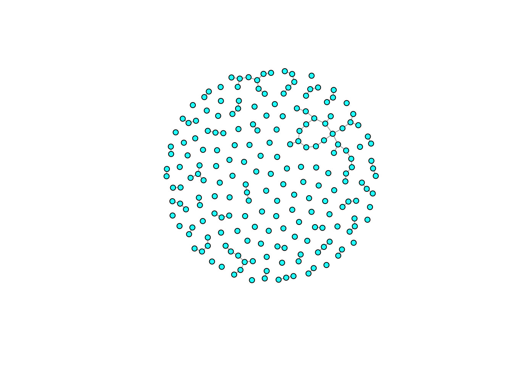
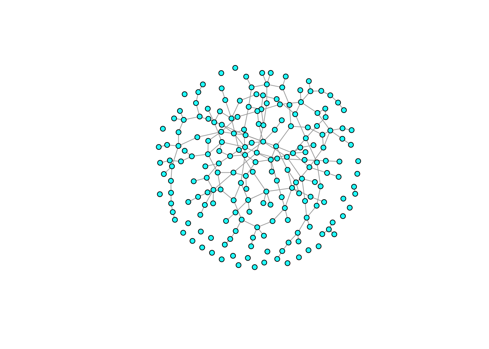
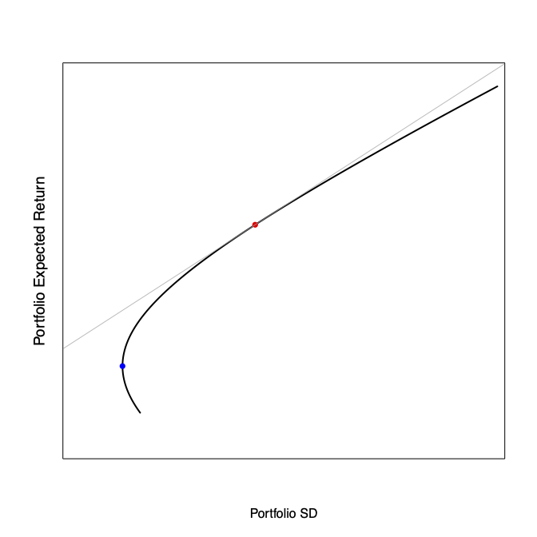

require(igraph)
## giant component
gg <- sample_gnp(n=200,p=1/200)
gg1 <- sample_gnp(n=200,p=1/100)
plot(gg,vertex.size=5,vertex.color="cyan", vertex.label=NA)
plot(gg1,vertex.size=5,vertex.color="cyan", vertex.label=NA)
As noted by Glynn Isaac in his classic work, the hearth, with its attendant central-place foraging is a perfect way of risk-pooling.
We tend to take central-place foraging for granted, but behavioral ecologists like Alistair Houston have noted the profound implications CPF has on optimal strategies.
HBEs have noted that sharing the principle mechanism for managing risk in hunter-gatherers and other subsistence populations. Work by scholars such as Magdalena Hurtado, Elizabeth Cashdan, Kim Hill, Bruce Winterhalder, Hilly Kaplan, Polly Wiessner. Some development economists too. Scott (1977): “Safety First”; Lipton (1968): “Survival Algorithms”
Sharing reduces risk. When we calculate the variance of a portfolio of items (e.g., the contributions of multiple sharing partners), the variance of the constituent contributions is scaled by the product of pairwise weights. Since these weights will always be less than one, this has the effect of reducing the overall variance (as long as the covariance between these contributions is not too high).
So here, two individuals have their own means and standard deviations of their subsistence returns, but when they share, their joint mean is the weighted average of their respective production rates and the variance is typically smaller than either of their individual variances.
Individual foraging returns are random variables. The distribution of returns for individual \(i\) has mean \(\mu_i\) and variance \(\sigma^2_i\). In sharing with another individual \(j\), \(i\) contributes a fraction \(0 \leq w_i \leq 1\).
Pooled mean
\[ \mu_{(i+j)} = w_i \mu_i + (1-w_i) \mu_j \] Pooled variance
\[ s^2_{(i+j)} = w^2_i \sigma^2_i + (1-w_i)^2 \sigma^2_j + 2 w_i (1-w_i)\, \mathrm{Cov}(i,j) \] ### Independence with Risk-Pooling
Individuals or small groups go out and forage. There are different levels of independence to these decisions. There is commonly a sexual division of labor, with women and men targeting resources of different average trophic level or expected risk/return. Furthermore, within each sex, individuals or small groups typically go out independently. A central place — something that is taken largely for granted among human foragers (Kelly 2013) — facilitates returning and broad-based sharing. This is the risk-pooling.
Sharing and exchange are the lifeblood of forager societies. As noted by Kaplan, Hill, and Hurtado (1990), food-sharing is the primary mechanism for risk management among foragers.
The classic portfolio formulation shows that the expected return on a portfolio is a horizontal parabola. For a given standard deviation (known as “volatility” in the finance literature) the parabola describes the maximum and minimum portfolio returns. Anything in between these extremes is also allowable. Obviously, we only care about the higher returns, so the upper branch of the parabola is the focus. This is known as the efficient frontier.

There are three assets plotted here (\(r_1\), \(r_2\), \(r_3\)) that define the efficient frontier. There are a number of portfolios we can calculate off of these. The minimum variance portfolio is the safest possible combination of \(r_1\), \(r_2\), and \(r_3\). Its expected return is quite low, but it has the lowest possible volatility associated with it.
If there is a certain asset (i.e., one with zero volatility), there is a special solution to the portfolio problem, known as the tangent portfolio because it is tangent to the efficient frontier. This portfolio provides the highest possible expected return for \(r_1\), \(r_2\), and \(r_3\) together with the certain asset.
Schmid et al. (2022) recently made the important observation that optimality and robustness trade-off in a formal sense.
From Barfield et al. (2011), the speed of evolution of a quantitative trait in a stage-structured population is:
\[ \Delta \bar{z} = \mathbf{G} \sum_{i,j}\frac{\partial \bar{\lambda}}{\partial \bar{a}_{ij}} \nabla_{\bar{z}_{j}} \bar{a}_{ij} \] (equation 1)
where \(\nabla_{\bar{z}_j}=(\partial /\left.\partial \bar{z}_1, \partial / \partial \bar{z}_2, \ldots, \partial / \partial \bar{z}_m\right)\) is the gradient operator with respect to trait means at stage \(j\).
What this shows is that the rate of evolution depends linearly on the sensitivities of \(\lambda\), which the authors define as the inverse of the population’s demographic robustness.
That is a trait with higher sensitivity is less robust.
From Tuljapurkar (1990):
\[ a = \log(\lambda) - \frac{1}{2 \lambda^2} \left( \frac{\partial \lambda}{\partial \bar{a}_{ij}} \right)^2 \sigma^2_{ij} \] (equation 2)
“As a consequence, the demographic robustness of a species is inversely proportional to \(\partial{\bar{\lambda}}/ \partial \bar{a}_{ij}\), with a higher sensitivity indicating a lower demographic robustness.”
So: 1. The rate of evolution is proportional to \(\partial{\bar{\lambda}}/ \partial \bar{a}_{ij}\), but 2. Demographic robustness is inversely related to \(\partial{\bar{\lambda}}/ \partial \bar{a}_{ij}\)
Hence, a trade-off.
In a stationary environment, where the mean and variance stay the same despite short-term variability, optimizing your decision-making based on your prior experience with the environment is a sound policy. However, in nonstationary environments, doing so can be a disaster. Nonstationary environments create what the psychologist Robin Hogarth called a wicked learning environment. In such environments, lessons that we learn from the past do not help us perform better. The economists John Kay & Mervin King note that when the learning environment is wicked “the application of the mathematics of probability is questionable and the results ambiguous.” In other words, in uncertain, wicked learning environments, maximization of something like expected utility, the primary tool of decision theory, economics, and planning won’t do us much good.
Need to approach learning/expertise/optimization/efficiency differently when learning environments are wicked.
The collected evolutionary lessons for adaptation suggest that we should promoting diversity in our potentially adaptive solutions. Under uncertainty — such as nonstationarity — the name of the game is robustness, not optimality. We should increase our tolerance for non-optimal solutions to problems if they contribute to the diversity of approaches. We should pursue policies that promote diversity, that generate hybridity, that add innovative peripheries to cohesive cores, and that increase autonomy for hotbeds of innovation.
Popular approaches to societal problem-solving like effective altruism — where charities are ranked according to some criterion of effectiveness and donors are encouraged to contribute only to those ranked highest in the resulting league table — at best are likely to miss transformative adaptive solutions and at worst will inhibit their incubation and emergence.
While we can learn a lot about adaptation and sustainability from looking at adaptations of the past and from economic and engineering studies of efficiency or optimality, this isn’t where the transformative ideas that we need to achieve sustainability are going to come from.
Explore/exploit strategies.
This is clearly a way that people are going to lazily suggest we will adapt
LLMs will always regress to the mean. Emily Bender talk
AIs are likely to pursue narrow optimality criteria. Unclear how they will perform on either rugged fitness surfaces or on flat fitness surfaces.
Perrow (1984) defines a “normal” accident as one that is inevitable in a high-complexity system. Three system features make a system susceptible to normal accidents:
Redundancy is a fundamental strategy for minimizing catastrophic failures.
Sagan (2004) argues that redundancy in human systems can often backfire. There are three ways that it can do this:
This last problem is reminiscent of Bowles (2016) and the notion of moral crowding-out in social contracts.
Just-In-Time Logistics (JIT) leads to tight coupling.
Southwest Airlines Supply-chain problems with the pandemic